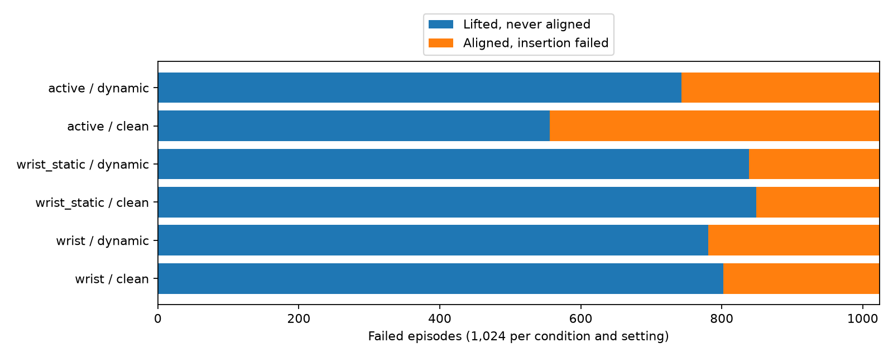
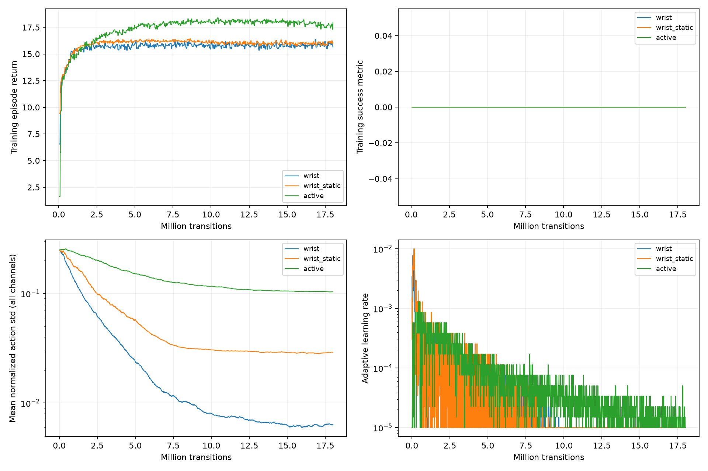

All three seed-0 policies completed 18,001,920 transitions. Each scored 0/1,024 on both clean and dynamic final tests; every variant scored 0/256. Midpoint validation also had zero successes. All final episodes reached the lift stage, but alignment was incomplete and no insertion succeeded. These results do not establish a successful camera condition.
| Camera | Test | Success | Lifted, not aligned | Aligned, not inserted | Mean / median error (mm) |
|---|---|---|---|---|---|
| wrist | clean | 0/1024 | 802 | 222 | 34.27 / 34.37 |
| wrist | dynamic | 0/1024 | 781 | 243 | 34.22 / 34.28 |
| wrist_static | clean | 0/1024 | 849 | 175 | 34.47 / 34.32 |
| wrist_static | dynamic | 0/1024 | 839 | 185 | 34.47 / 34.10 |
| active | clean | 0/1024 | 556 | 468 | 32.65 / 34.22 |
| active | dynamic | 0/1024 | 743 | 281 | 35.24 / 34.94 |

Alignment means the episode met the approach-stage condition at least once, not that it maintained alignment. Final object-origin errors and stage history cannot distinguish perception, control, or contact causes.
| Camera | Final XYZ request std (mm) | Last 100 updates: mean return | Training success | Final LR |
|---|---|---|---|---|
| wrist | 0.0670, 0.0225, 0.0058 | 15.89 | 0.0% | 1e-05 |
| wrist_static | 0.0075, 0.1436, 0.2845 | 16.00 | 0.0% | 1e-05 |
| active | 0.0728, 0.0545, 0.5014 | 17.68 | 0.0% | 1e-05 |

Initial XYZ request standard deviation was 1.25 mm per axis. Values above are the saved Gaussian standard deviations multiplied by 5 mm, before action clipping and workspace/control limits. Active-camera channels are excluded from the XYZ table but included in the logged mean-std plot. Reduced exploration and positive return without task completion are consistent with learning a partial approach; they do not prove why insertion failed.
The next diagnostic should test whether this exact staged reward and incremental-control recipe is learnable with full state before committing to more RGB training. A successful scripted controller establishes feasibility, but not PPO learnability. No additional jobs were launched by this analysis.
12 evaluations / 9,216 episode records checked, 3 checkpoint hashes and 65 frozen source hashes verified. No physical success violations. Full analysis JSON · All variants and milestones CSV.
One training seed; clean training, dynamic robustness test. Stage flags are history through the previous reward sample. Terminal errors are not trajectory minima. Captured traces are selected representatives, not a random population sample. Exploration shrinkage is descriptive, not causal proof.
Built 2026-10-09T22:45:17.674904+00:00.